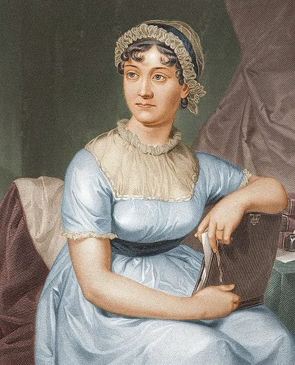
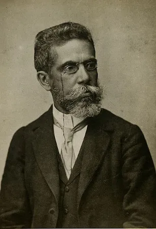
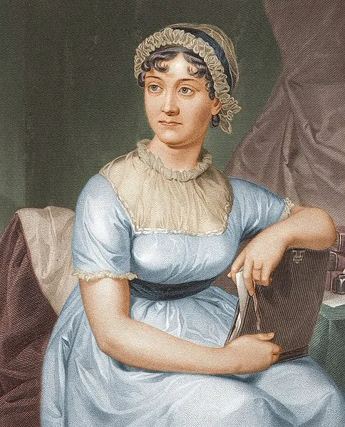
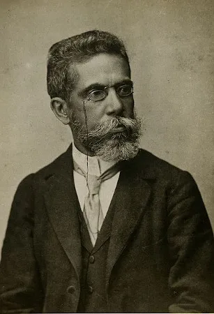

A História do Livro é tão antiga quanto a história da escrita. Desde 6 mil anos atrás já surgiam os primeiros “protótipos” de livros. O que foi modificado até o objeto livro que conhecemos hoje foi o “suporte” a partir das inúmeras inovações técnicas, escolhido para grafar as letras do alfabeto. Ou seja, antes era gravado pelos povos antigos (babilônicos, egípcios, gregos, sumérios, etc.) em placas de argila, cascas de árvore, pedra, madeira, barro, folhas de palmeiras. Posteriormente o suporte para a impressão dos textos, foi o papiro (planta mais resistente), pergaminhos (pele de animal), códices (manuscritos de madeira), folhas de papel, até chegarem na era digital dos livros eletrônicos.
No Egito antigo, os “escribas” ou escrivães eram pessoas responsáveis pela leitura e produção dos textos nos papiros, espécies de plantas usadas desde 2500 a.C., as quais, por sua vez, constituíam um grande rolo de folhas pregadas umas às outras. Foi por esse motivo, do demasiado volume, que surgiram os pergaminhos, suportes de peles de animais (carneiro, cabra, ovelha, etc.), muito utilizados pelos “monges copistas” da Idade Média. O livro, um produto intelectual, surgiu da necessidade dos povos de guardar o conhecimento e passa-los de geração em geração. É um objeto de enorme valor cultural e histórico, muito importante para a disseminação do conhecimento no mundo.

 


